Every name, every mark, where each one stands
Three companies, one language, a growing family of F1R3-named products, and a long tail of names that exist only in GitHub. The naming convention is already real: F1R3 plus a plain word. Nicholas's 28 August point stands: it is a namespace nobody else would follow us into.
Final approved and in use Pending drawn, waiting on sign-off Draft first pass exists No mark named, nothing drawn
The companies
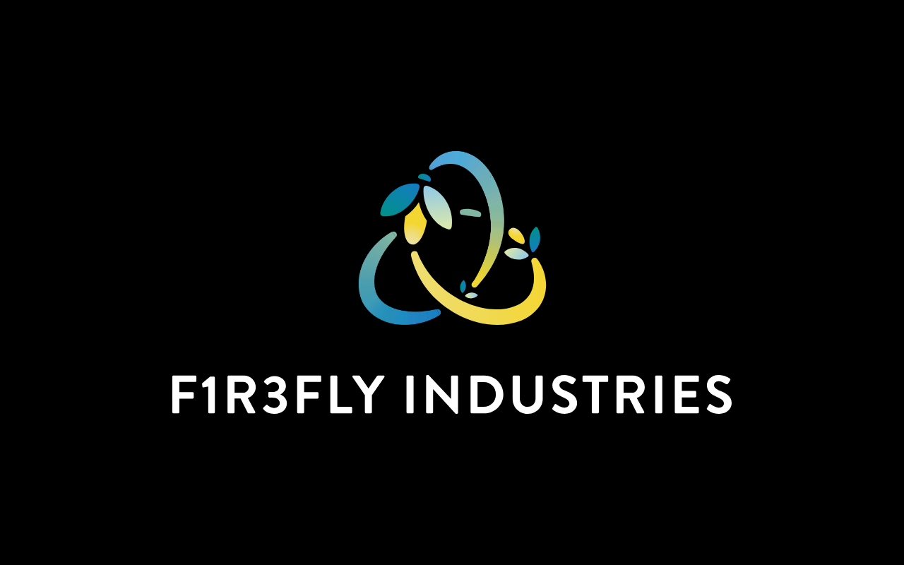
F1R3FLY Industries
The parent. The trefoil knot is "the Mark." Brand book, 23 September 2026 edition.
Final
Open: Greg said on 28 August he'd be fine with "F1R3 Industries." Nobody has decided.
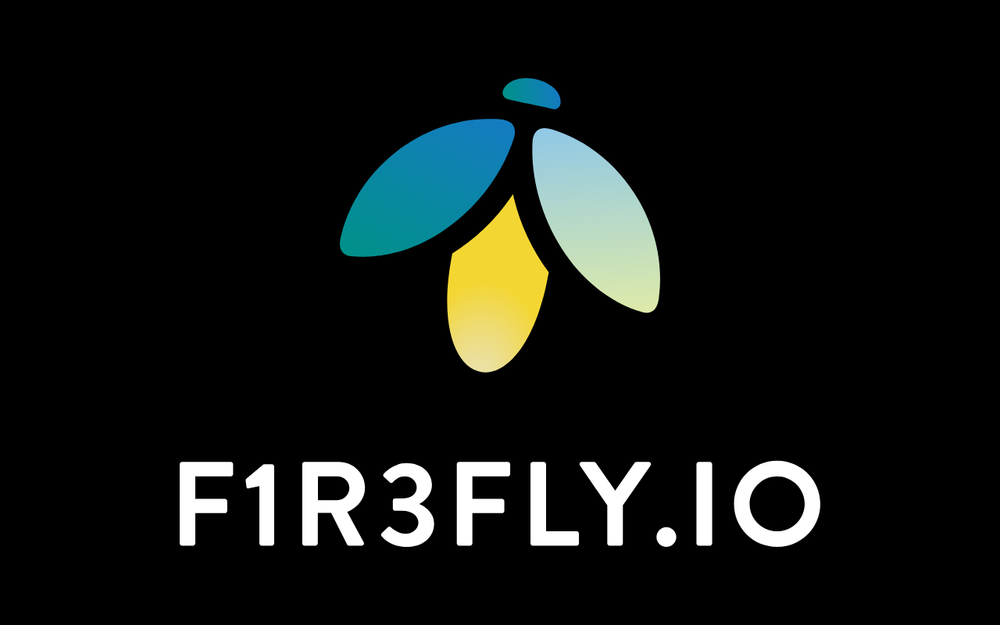
F1R3FLY.IO
The developer platform, a subsidiary. The firefly bug. Guidebook, 23 September 2026 edition. Site: f1r3fly.io, dark.
Final
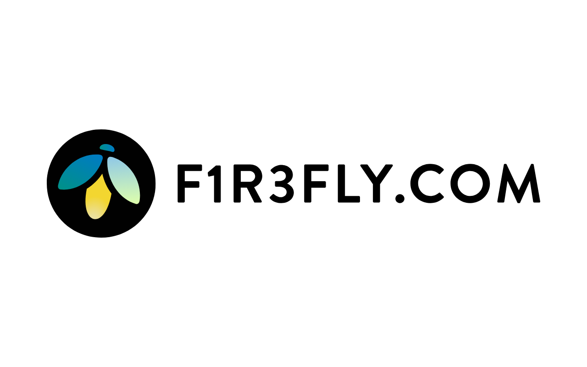
F1R3FLY.com
F1R3FLY Limited, the UK company, not the parent. Light site. Nicholas and Stephen are restructuring it around concurrency with applications as sub-pages.
Final mark Site in progress
The language and the core
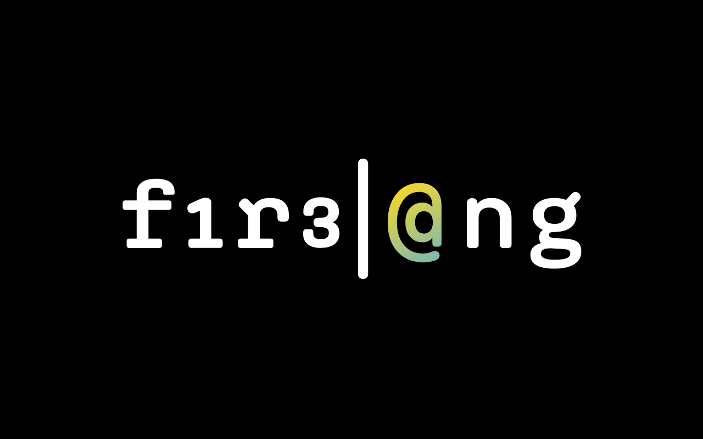
f1r3lang
The language, formerly Rholang; RoLang retired 28 August. Said "fire-lang." Mark v1, styled f1r3|@ng. Site live at f1r3lang.ai.
Draft v1
F1R3Node
The node and shard software (f1r3node, f1r3node-rust). Named in every repo, never branded.
No mark
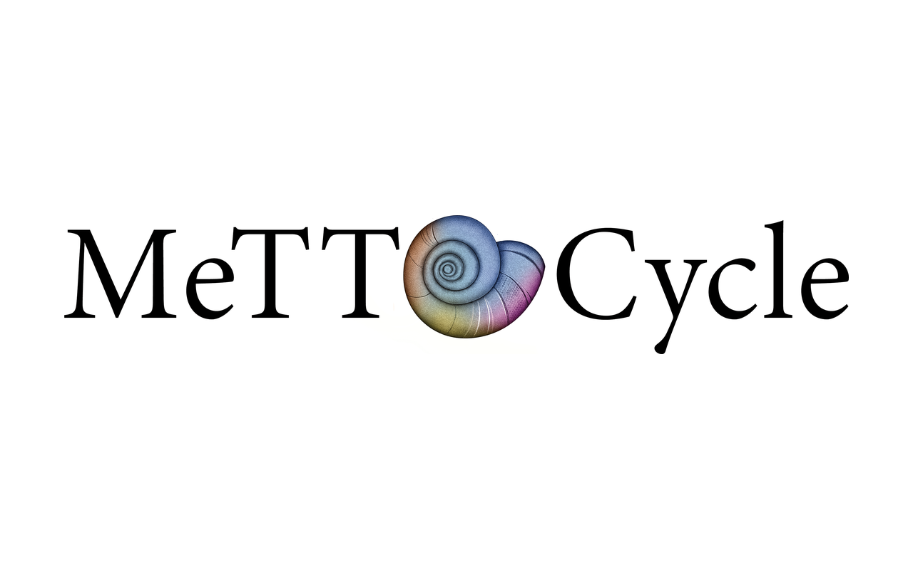
MeTTaCycle
The decentralized agentic platform and its yellow paper. Logo drafts from 2025 (eight rounds); Greg liked the lightest weight of the Minion Variable version. Never finalized.
Draft, 2025
Products with marks
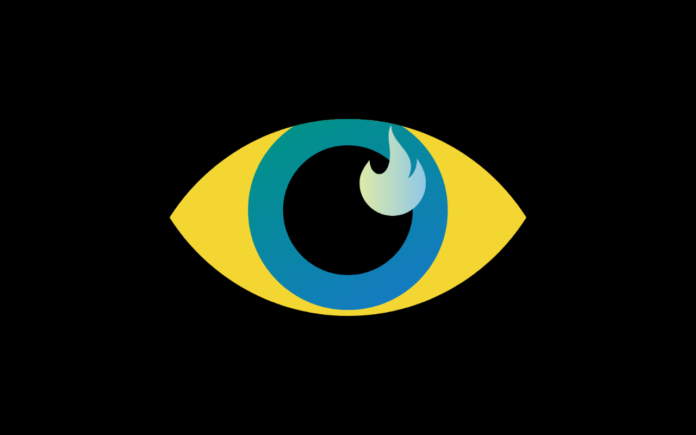
F1R3Gaze
The browser. Eye mark, Greg's pick on 16 October; icons delivered to Dylon 18 October. Wordmark and lockups drafted, awaiting Greg.
Mark final Wordmark
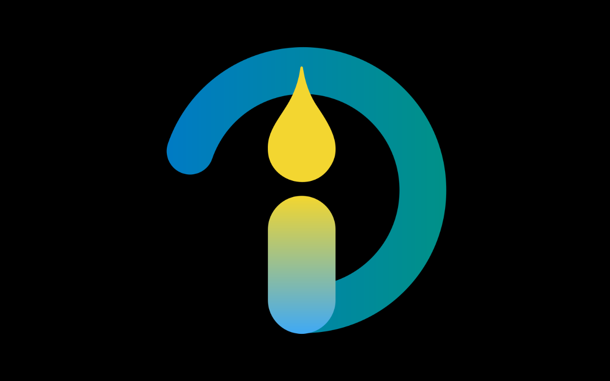
ign1t10n
The installer and menu-bar app that runs the local shard. On-button mark, Greg's pick on 16 October; delivered. Wordmark drafted.
Mark final Wordmark
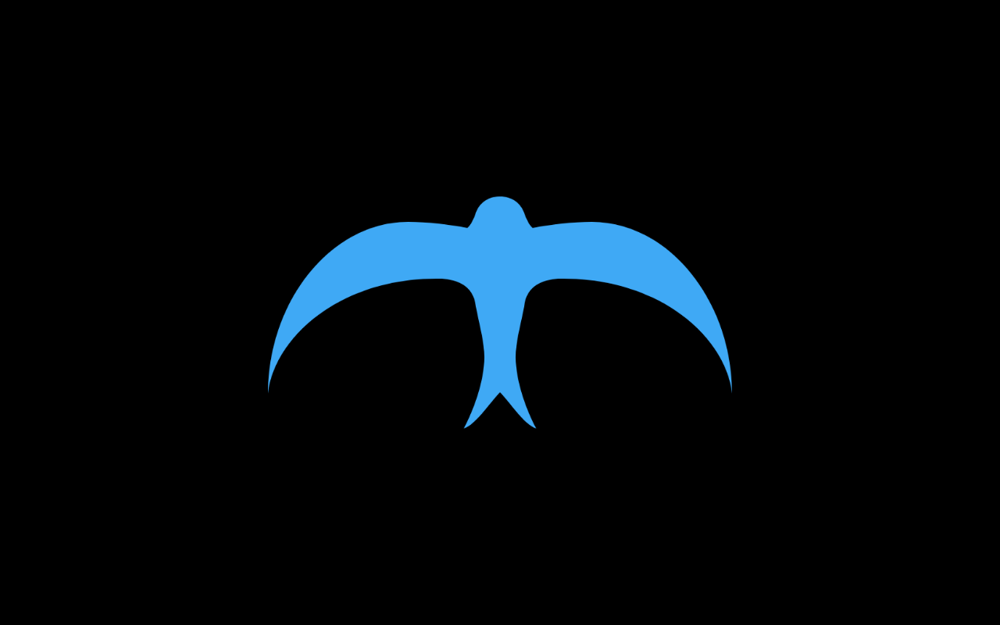
F1R3Sky
The Bluesky fork, with wallets and agents (f1r3sky, embers). A swift seen from below: sickle wings, forked tail for "a fork of Bluesky." First pass 18 October.
In progress
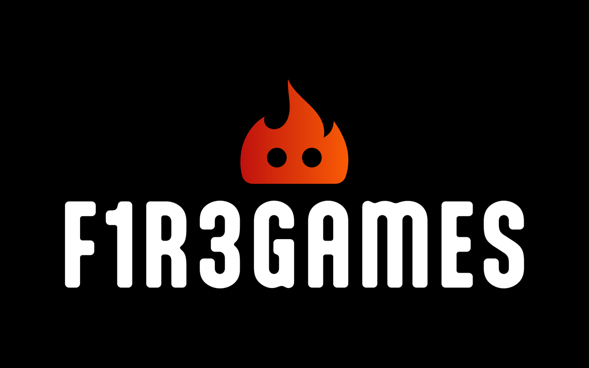
F1R3Games
Flame mark and wordmark, July 2026. Games for collective intelligence: F1R3Pix, F1R3Beat, F1R3Ink, F1R3Skein, F1R3SideChat, each with its own wordmark. Greg, 8 October: two more games to build, then branding; may ship only inside the browser.
Approval pending
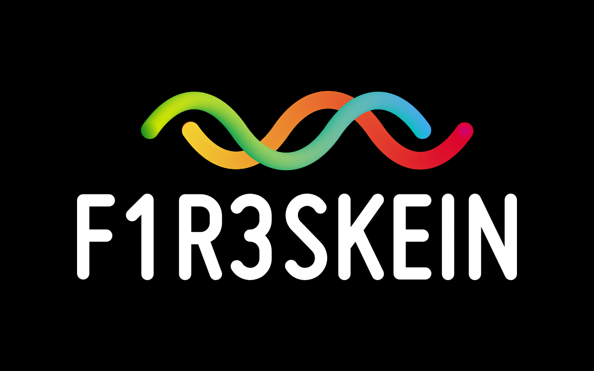
F1R3Skein
One of the five games, shown as the example of the per-game wordmarks.
Pending with F1R3Games
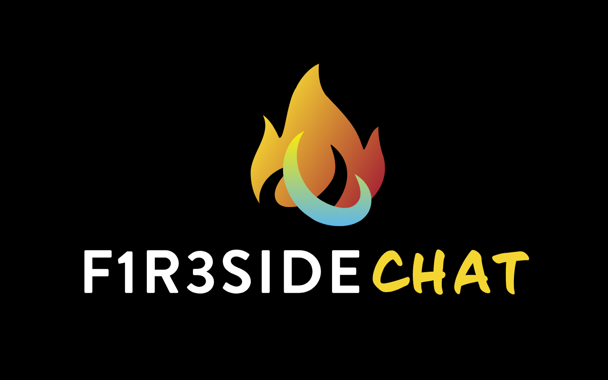
F1R3SideChat
Another of the five.
Pending with F1R3Games
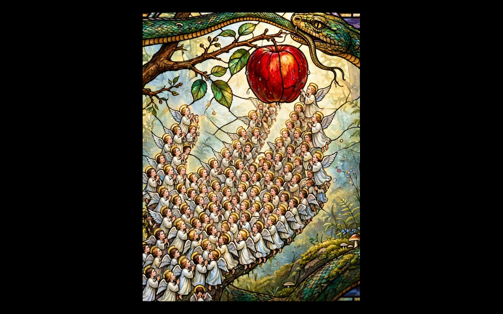
Finding Mind
Greg's book, and the podcast. Its own brand under the umbrella (Greg, 16 October). The image is Greg's reference from September: the hand of cells reaching for the apple, the serpent above. Logo and podcast branding to come.
In progress
Named in GitHub, no mark yet
From the F1R3FLY-io organization on 19 October (75 repositories). The question for Greg: which of these are products that people will meet, and so need a mark, and which are just repositories.
| Name | What it is, in GitHub's words | Last touched |
|---|---|---|
| F1R3Drive | Mounts F1R3FLY chain state as a local filesystem; Finder extension for share links and permissions. "The flagship app" (28 August). | 19 October |
| F1R3Riz | A claim-and-evidence-based reputation system ("riz" as charisma). | 13 August |
| F1R3Score | A tool for writing scores in a mobile process calculus. | 28 September |
| F1R3Space | f1r3lang model checker and simulator. | 26 August |
| F1R3Faucet | A faucet and website for F1R3FLY shards. | 16 October |
| F1R3Mail | A F1R3FLY shard as a fault-tolerant mail server. | 10 August |
| F1R3BotGateway | A gateway to the shard from the major social platforms. | 10 August |
| F1R3Fi | DeFi with Peyton-Jones contracts. | 28 June |
| F1R3Docs | Google Docs / Office-like functionality on a shard. | 25 April |
| F1r3bu1ld3r | Visualisation tool for infrastructure as code. | 29 June 2025 |
| CatchingF1R3 | Decentralized voting. | 10 March |
| Campf1r3 and Rhobots in Space | Apple Vision Pro: a portable rho executive, and an app for interfacing with rho execution. | 18 September |
| Saph1r3 | Compiler from rho to GPU. | 23 September |
| f1r3wallet, f1r3bot | A basic wallet; a Discord bot. | March 2025 |
| Elemental | Agent avatars in the Unreal Engine. | 14 August |
| Chimney, lightning-bug, newspeak | Bulk importer; a browser-based code editor; federated chat. | Various |
Web properties, for completeness
f1r3fly.io (dark, the platform), f1r3fly.com (light, the UK company), f1r3lang.ai (the language), and an older organization site at f1r3fly-io.github.io (a Jekyll "agency" theme from three years ago, last deployed five months ago; Jeff and Greg are its contributors). The old site still carries whatever branding it had then; worth a look before anyone sends a link to it.
Outside the map
Leithaus, Greg's music, has its own site and is not part of this study.
Structure
- F1R3FLY Industries (parent; the knot)
- F1R3FLY.IO (platform; the bug)
- f1r3lang, F1R3Node
- F1R3Gaze, ign1t10n
- F1R3Sky, F1R3Drive, F1R3Riz, F1R3Games, and the long tail
- F1R3FLY Limited (F1R3FLY.com, UK)
- Finding Mind (book and podcast, own brand under the umbrella)
- F1R3FLY.IO (platform; the bug)
The naming convention is already the rule in practice: F1R3 plus a plain word. The study result and the F1R3 Industries question land together.